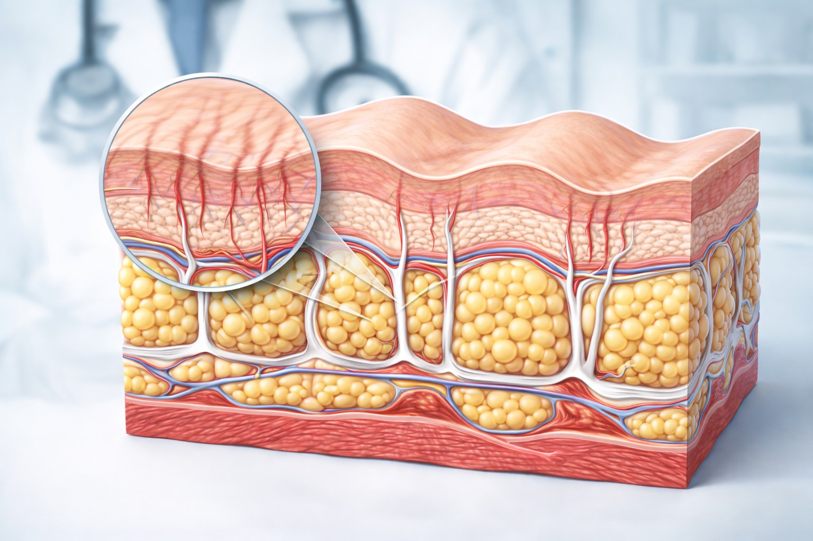
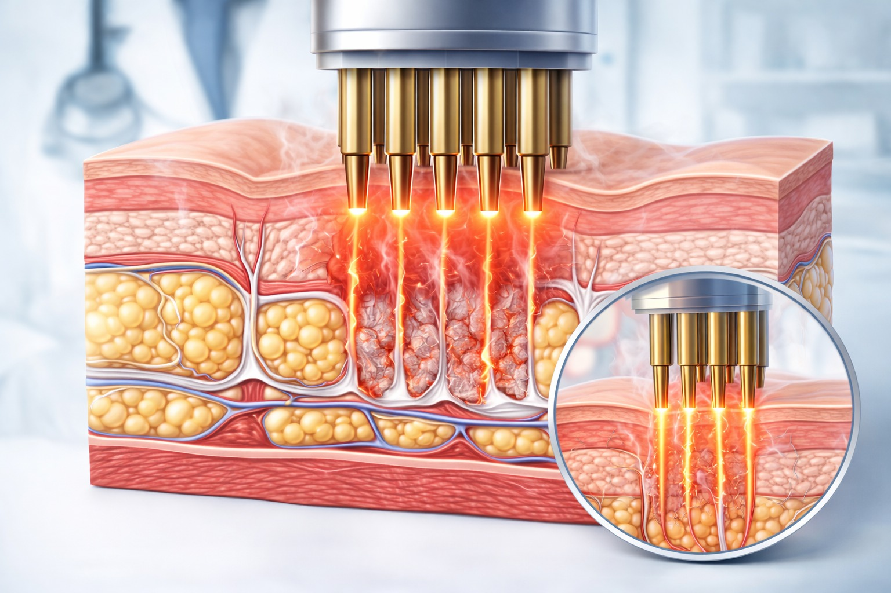

סימני מתיחה (סטריות) הם אחד האתגרים האסתטיים הנפוצים ביותר — ומופיעים אצל גברים ונשים כאחד. הם נוצרים כאשר העור נמתח מהר יותר מהיכולת שלו להסתגל — וסיבי הקולגן והאלסטין נקרעים.

ברויאל-מד אנו מטפלים בסימני מתיחה בפרוטוקול רפואי מתקדם שמגרה מחדש את ייצור הקולגן, משפר את מרקם הרקמה ומשפר את המראה הכללי של הסימנים.
מתיחה מהירה של העור בבטן, ירכיים ושדיים — אחת הסיבות הנפוצות ביותר.
צמיחה מהירה של הגוף לפני שהעור "הדביק" את הקצב.
שינויים פתאומיים בנפח הגוף מאמצים את סיבי הקולגן מעבר לגבולם.
גדילה מהירה של מסת השריר יוצרת מתיחה על העור מבפנים.



הפרוטוקול שלנו עובד על שלושה מישורים במקביל:
- גירוי ייצור קולגן ואלסטין חדשים באזור הפגוע
- שיפור מרקם ועובי הרקמה
- שיפור הצבע — מסגול/אדום לגוון קרוב יותר לצבע העור
- שיפור עומק וגובה הסימן
- חידוש פעילות תאי הגזע באזור
- שיפור ניכר בצבע הסימנים — מסגול/אדום לגוון עור
- שיפור במרקם ובעומק הסימנים
- עור חלק ואחיד יותר באזור הטיפול
- שיפור כללי במראה הגוף
סימנים חדשים (בצבע אדום-סגול) מגיבים טוב יותר לטיפול מאשר סימנים ישנים (לבנים). ככל שמתחילים מוקדם יותר — התוצאות טובות יותר. המטרה היא שיפור משמעותי במראה — לא מחיקה מוחלטת.
- בטן — לאחר הריון או שינוי משקל
- ירכיים וישבן
- שדיים
- זרועות עליונות
- גב תחתון ומותניים
- סימני מתיחה לאחר הריון ולידה
- סימני מתיחה עקב גדילה מהירה
- לאחר עלייה או ירידה מהירה במשקל
- סימנים חדשים (אדומים-סגולים) — תגובה מיטבית
- סימנים ישנים (לבנים) — שיפור חלקי אפשרי
- מי שרוצה לשפר את מראה הגוף ללא ניתוח
- ככל שמתחילים מוקדם יותר — התוצאות טובות יותר
- נדרשת סדרה של 4–8 טיפולים בהתאם לחומרת הסימנים
- מרווח מומלץ: 3–4 שבועות בין טיפולים
- הטיפול אינו כואב ואין זמן השבתה
- שימוש בקרם לחות ביתי תורם לתוצאות
- הפרוטוקול מותאם אישית לאחר אבחון מקצועי
להתאמת פרוטוקול אישי על בסיס אבחון מקצועי — ניתן לתאם שיחת ייעוץ ללא עלות וללא התחייבות.
תיאום תור טלפוני ללא עלות